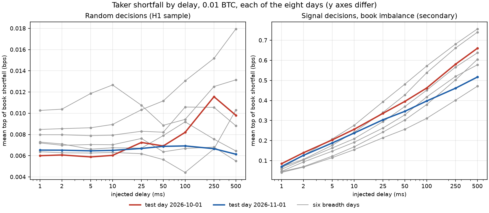
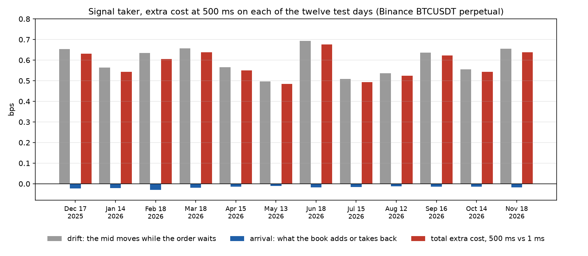

Proposal 01
From Signal to Fill
When market conditions are matched, does extra delay between a trading decision and its order’s outcome cost price or fills?
- Hypothesis
- With market conditions held identical, extra delay between decision and order outcome, from 1 ms to 500 ms, raises a taker’s execution shortfall and lowers a passive order’s chance of filling.
- Test setup
- A preregistered replay of Binance BTCUSDT perpetual book and trade data: the same decision replayed at nine delays, two locked test days run once, six more days for breadth, plus one 2012 Nasdaq day and a real broker latency measurement.
- Verdict
- Inconclusive. Both primary tests are null, but by design they could hardly show a cost. A taker acting on order book imbalance paid 0.52 to 0.66 bps by 500 ms on the test days, an upper end.
Why I asked this
Working on Nasdaq closing auctions taught me how much the timing of information matters. Building a walk-forward trading system made me skeptical of results that only look good under one set of assumptions. And going back over the swap quotes and slippage in my DEX prototype reminded me that a quoted price and an executed trade are different things.
So I started from a simple belief: latency costs takers through price drift and costs makers through lost queue position. I wanted to measure both, on the same decisions, with nothing changing except the delay. Public data has no decision timestamps, so instead of comparing similar orders as the proposal planned, I replayed the same decision at different delays.
What I predicted, before seeing any test data
I wrote the preregistration on November 15, before the replay engine existed and before either test day was downloaded. The commit that adds it is the timestamp, and the data script refuses to fetch test days until that file is in git history.
Two main predictions. For a taker, the price should get worse as delay grows, by at least 0.1 bps at 500 ms on each test day. For a passive order, the chance of filling should fall as delay grows.
How I tested it
I used public Binance BTCUSDT perpetual data: top of book, five levels of depth, and every trade. One day was for building and debugging. Two days, October 1 and November 1, were locked away as tests and run once.
Decisions fire at random times, and each one is replayed nine times, with the order reaching the book 1, 2, 5, 10, 25, 50, 100, 250 and 500 ms later. Each replay has the same moment, side and size, and only the delay changes. That gave 8,443 decisions on October 1 and 8,323 on November 1. The passive side ran under three rules for where cancellations come out of the queue, since a replay can’t see that directly.
Around that core: six more first of month days for breadth, one 2012 Nasdaq day of real order lifecycles, and 200 real orders sent to a broker’s paper venue to see where one retail setup sits on the grid.
Results
Both primary tests are null on both test days. At 500 ms the taker paid 0.0038 bps more on October 1 and 0.0004 bps less on November 1, far below the 0.1 bps bar. Fill probability was flat under all three queue rules.
That is not a finding that delay costs nothing. A decision made at a random moment, whose order reads the book again when it arrives, has close to zero expected cost of delay by construction. It came up on a reread on November 18, before I ran any test day, and I wrote it down as a deviation. So these nulls only show the replay doesn’t invent a cost. They can’t tell whether latency matters.
Where delay did cost something was an order acting on a signal. A taker trading on top of book imbalance paid about 0.085 bps at 1 ms and 0.66 bps at 500 ms on October 1, and 0.071 and 0.52 bps on November 1. On the six breadth days the 500 ms cost ran from 0.47 to 0.76 bps.

I read that size as an upper end. The replay has no race, so the fast order never loses the touch to someone faster. And at 1 ms the touch showed less than my order on 47% of these decisions on October 1 and 35% on November 1, so the fast baseline often fills at a price a faster trader would likely have taken first. These decisions also overlap and bunch in time, so their intervals may be too narrow. It is also a secondary result, not one of the registered primary tests.
The Nasdaq test on real order lifecycles is null too: a longer rest before the first fill goes with a worse markout, but the effect shrinks to near zero, with intervals covering zero, once spread, displayed size, imbalance, volatility and time of day are controlled for. And the broker’s paper venue took a median 255.9 ms to acknowledge an order, close to the 250 ms point on my grid, though that is a different venue and not Binance.
What broke along the way
- On day one, the LOBSTER sample links started returning a web page dressed up as a zip file. The download script now checks that each LOBSTER file really is a zip.
- A 2025 paper had already run a live taker experiment on Binance and Bybit, close to my first question. I narrowed what I claim as new.
- The design flaw above: random decisions that reprice on arrival can’t show a latency cost. I found it before the test days and kept the registered tests as they were, rather than quietly swapping them.
- The October 1 run needed about 30 minutes and the remote worker stops any job at 20, so I reran it from scratch in fixed stages. What the first start had written came back the same, the json files byte for byte and the saved arrays value for value. The steps after the cut, and all of November 1, only ever ran in stages.
What I believe now
I thought the passive side would be where delay costs most, since BTCUSDT’s spread is one tick almost all the time and queue position should matter, a reason that turned out weaker than I thought, since a tick here is only about 0.013 bps. On random decisions neither side shows a cost, but that test couldn’t show one by design, so it doesn’t settle the question. The cost that does show up is a taker acting on book imbalance, roughly half to three quarters of a bp by 500 ms on every day I ran, and that is an upper end because my replay has no race for the touch.
This is a simulation with injected delay on a handful of crypto days. It says nothing about real routing speed, other venues or other kinds of day. Nobody but me has reviewed it yet, so I’m open to feedback.
Sequels
The verdict above is final and stays as written. Each sequel is a new, separately judged test that goes one step further.
01.b · Sequel · released Nov 25, 2026 · revisited Nov 26, 2026
Signal Cost Confirm
Two things in 01 looked real but weren’t its main tests. A taker acting on top of book imbalance paid more the longer its order took to reach the book, and a fixed price passive order looked costlier with delay once the orders marketable on arrival were left out. 01.b checked both once, on twelve days I hadn’t seen, with the rules written first.
- Hypothesis
- A taker acting on an extreme imbalance signal pays more the longer its order takes (C1), and among the fixed price passive orders kept, with the ones marketable on arrival left out, cost is higher at longer delays (C2).
- Test setup
- Rules preregistered, then twelve unseen CryptoStruct days of Binance BTCUSDT perpetual data, the Wednesday closest to the 15th of each month from December 2025 to November 2026 (June moved to Thursday the 18th after a data notice on the Wednesday), each run once. Forty secondary days (four more CryptoStruct days, Tardis BTCUSDT and ETHUSDT, and Bybit) sit outside the verdict.
- Verdict
- Supported for both. C1’s slope interval is above zero on all 12 days, an extra 0.48 to 0.68 bps by 500 ms. C2 holds but is small, and weakest under the back queue rule, where 11 of 12 days are above zero. See Revisited for how much C2 rests on which orders are kept.

So the cost 01 hinted at shows up on every one of twelve unseen days. It isn’t the book getting worse. It’s the move the signal predicted happening while the order waits. C2 holds on these days but is small, 0.021 to 0.090 bps from 1 ms to 500 ms under the front rule. Counting the 2 and 5 bps fees makes it bigger, not smaller, 0.063 to 0.281 bps, because a longer wait turns some maker fills into taker crossings. It’s still well under a bp, and it describes the orders kept rather than a causal effect of delay.
C1’s day rule also passed on every one of the forty secondary days, ETHUSDT and Bybit included, though none of them count toward the verdict. The one setting I changed after a look at data was Bybit’s signal threshold, after its build day. Both versions ran on every test date, and the original one gave a larger C1 on all 12, so the change made the effect smaller, not bigger.
Limits: one venue, one symbol and one day a month for a year, and my replay still has no real race for the touch.
Revisited Nov 26, 2026 · Exploratory, after release
A day after release I went back to C2 with two questions I’d left open. Neither changes C1, C2 or the verdict.
How much of it is fees. Under the front rule, fees are 66 to 73 percent of C2’s extra cost from 1 ms to 500 ms on every test day.
What if a faster trader takes the stale price. I kept every passive order and treated any that arrived marketable as losing the race, so it crosses 10 s later. Cost then falls with delay, below zero on 11 of 12 days under front and all 12 under random and back. Those orders still beat the decision mid when they cross late, because most of the move that made them marketable is still there. Every other order gets dearer with delay, as in C2.
So C2’s sign rests on which orders are kept. This reuses the same twelve days, so it explains them and doesn’t confirm anything new.